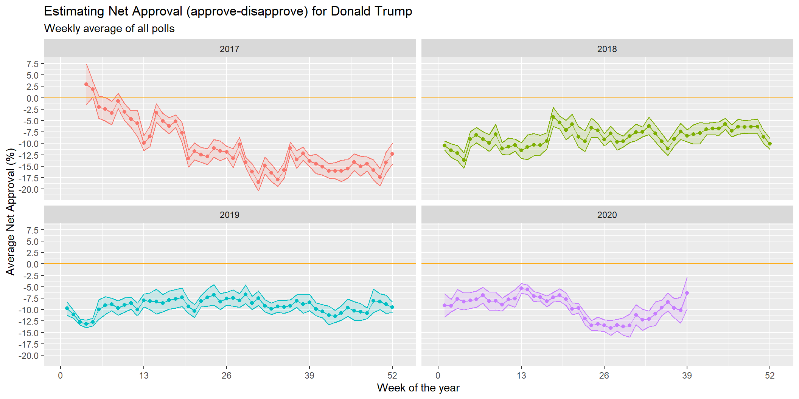

# Import approval polls data
approval_polllist <- read_csv(here::here('data', 'approval_polllist.csv'))
# or directly off fivethirtyeight website
# approval_polllist <- read_csv('https://projects.fivethirtyeight.com/trump-approval-data/approval_polllist.csv')
glimpse(approval_polllist)## Rows: 15,619
## Columns: 22
## $ president <chr> "Donald Trump", "Donald Trump", "Donald Trump",...
## $ subgroup <chr> "All polls", "All polls", "All polls", "All pol...
## $ modeldate <chr> "9/27/2020", "9/27/2020", "9/27/2020", "9/27/20...
## $ startdate <chr> "1/20/2017", "1/20/2017", "1/20/2017", "1/21/20...
## $ enddate <chr> "1/22/2017", "1/22/2017", "1/24/2017", "1/23/20...
## $ pollster <chr> "Gallup", "Morning Consult", "Ipsos", "Gallup",...
## $ grade <chr> "B", "B/C", "B-", "B", "B-", "C+", "B+", "B", "...
## $ samplesize <dbl> 1500, 1992, 1632, 1500, 1651, 1500, 1190, 1500,...
## $ population <chr> "a", "rv", "a", "a", "a", "lv", "rv", "a", "lv"...
## $ weight <dbl> 0.262, 0.680, 0.153, 0.243, 0.142, 0.200, 1.514...
## $ influence <dbl> 0, 0, 0, 0, 0, 0, 0, 0, 0, 0, 0, 0, 0, 0, 0, 0,...
## $ approve <dbl> 45.0, 46.0, 42.1, 45.0, 42.3, 57.0, 36.0, 46.0,...
## $ disapprove <dbl> 45.0, 37.0, 45.2, 46.0, 45.8, 43.0, 44.0, 45.0,...
## $ adjusted_approve <dbl> 45.7, 45.3, 43.2, 45.7, 43.4, 51.5, 37.6, 46.7,...
## $ adjusted_disapprove <dbl> 43.6, 38.3, 43.9, 44.6, 44.5, 44.5, 42.8, 43.6,...
## $ multiversions <chr> NA, NA, NA, NA, NA, NA, NA, NA, NA, NA, NA, NA,...
## $ tracking <lgl> TRUE, NA, TRUE, TRUE, TRUE, TRUE, NA, TRUE, TRU...
## $ url <chr> "http://www.gallup.com/poll/201617/gallup-daily...
## $ poll_id <dbl> 49253, 49249, 49426, 49262, 49425, 49266, 49260...
## $ question_id <dbl> 77265, 77261, 77599, 77274, 77598, 77278, 77272...
## $ createddate <chr> "1/23/2017", "1/23/2017", "3/1/2017", "1/24/201...
## $ timestamp <chr> "00:45:20 27 Sep 2020", "00:45:20 27 Sep 2020",...# Use `lubridate` to fix dates, as they are given as characters.
library(lubridate)
approval_polllist_converted <- approval_polllist %>%
mutate(modeldate = mdy(modeldate),
startdate = mdy(startdate),
enddate = mdy(enddate))
approval_polllist_converted## # A tibble: 15,619 x 22
## president subgroup modeldate startdate enddate pollster grade samplesize
## <chr> <chr> <date> <date> <date> <chr> <chr> <dbl>
## 1 Donald T~ All pol~ 2020-09-27 2017-01-20 2017-01-22 Gallup B 1500
## 2 Donald T~ All pol~ 2020-09-27 2017-01-20 2017-01-22 Morning~ B/C 1992
## 3 Donald T~ All pol~ 2020-09-27 2017-01-20 2017-01-24 Ipsos B- 1632
## 4 Donald T~ All pol~ 2020-09-27 2017-01-21 2017-01-23 Gallup B 1500
## 5 Donald T~ All pol~ 2020-09-27 2017-01-21 2017-01-25 Ipsos B- 1651
## 6 Donald T~ All pol~ 2020-09-27 2017-01-22 2017-01-24 Rasmuss~ C+ 1500
## 7 Donald T~ All pol~ 2020-09-27 2017-01-20 2017-01-25 Quinnip~ B+ 1190
## 8 Donald T~ All pol~ 2020-09-27 2017-01-22 2017-01-24 Gallup B 1500
## 9 Donald T~ All pol~ 2020-09-27 2017-01-23 2017-01-25 Rasmuss~ C+ 1500
## 10 Donald T~ All pol~ 2020-09-27 2017-01-23 2017-01-25 Gallup B 1500
## # ... with 15,609 more rows, and 14 more variables: population <chr>,
## # weight <dbl>, influence <dbl>, approve <dbl>, disapprove <dbl>,
## # adjusted_approve <dbl>, adjusted_disapprove <dbl>, multiversions <chr>,
## # tracking <lgl>, url <chr>, poll_id <dbl>, question_id <dbl>,
## # createddate <chr>, timestamp <chr>Calculating the average net approval rate (approve- disapprove) for each week since President Trump got into office.
# Summarizing the data
weekly_net_approval <- approval_polllist_converted %>% filter(subgroup == "Voters") %>%
mutate(net_approval = approve - disapprove,
week = isoweek(enddate),
year = year(enddate)) %>%
group_by(year, week) %>%
summarise(mean_weekly_nar = mean(net_approval),
sd_weekly_nar = sd(net_approval),
count_weekly_nar = n(),
t_distribution=qt(0.975, count_weekly_nar-1),
se_weekly_nar = sd_weekly_nar/sqrt(count_weekly_nar),
interval_value=t_distribution*se_weekly_nar,
low_ci=mean_weekly_nar-interval_value,
high_ci=mean_weekly_nar+interval_value) %>%
na.omit()
weekly_net_approval## # A tibble: 192 x 10
## # Groups: year [4]
## year week mean_weekly_nar sd_weekly_nar count_weekly_nar t_distribution
## <dbl> <dbl> <dbl> <dbl> <int> <dbl>
## 1 2017 4 2.96 7.67 14 2.16
## 2 2017 5 1.85 3.67 20 2.09
## 3 2017 6 -2.06 5.82 25 2.06
## 4 2017 7 -2.46 6.35 25 2.06
## 5 2017 8 -3.32 5.96 23 2.07
## 6 2017 9 -0.704 3.81 23 2.07
## 7 2017 10 -3.13 4.49 25 2.06
## 8 2017 11 -4.67 4.43 25 2.06
## 9 2017 12 -5.6 6.71 24 2.07
## 10 2017 13 -9.89 3.94 25 2.06
## # ... with 182 more rows, and 4 more variables: se_weekly_nar <dbl>,
## # interval_value <dbl>, low_ci <dbl>, high_ci <dbl># Plotting the data
ggplot(weekly_net_approval, aes(x = week, y = mean_weekly_nar, colour=factor(year))) +
facet_wrap(~year) +
geom_ribbon(aes(ymin = low_ci, ymax = high_ci, colour=factor(year), fill=factor(year)), alpha=0.15) +
scale_x_continuous(breaks = seq(0,53, by = 13), limits = c(0,53)) +
scale_y_continuous(breaks = seq(-20,7.5, by = 2.5), limits = c(-21,7.5)) +
geom_hline(yintercept=0, color='orange') +
geom_point() +
geom_line() +
theme(legend.position = "none") +
ggtitle("Estimating Net Approval (approve-disapprove) for Donald Trump", subtitle = "Weekly average of all polls") +
labs(y="Average Net Approval (%)", x="Week of the year")
Comparing the confidence intervals for week 15 (6-12 April 2020) and week 34 (17-23 August 2020).
ci_wna <- weekly_net_approval %>%
mutate(ci = interval_value * 2)
ci_wna## # A tibble: 192 x 11
## # Groups: year [4]
## year week mean_weekly_nar sd_weekly_nar count_weekly_nar t_distribution
## <dbl> <dbl> <dbl> <dbl> <int> <dbl>
## 1 2017 4 2.96 7.67 14 2.16
## 2 2017 5 1.85 3.67 20 2.09
## 3 2017 6 -2.06 5.82 25 2.06
## 4 2017 7 -2.46 6.35 25 2.06
## 5 2017 8 -3.32 5.96 23 2.07
## 6 2017 9 -0.704 3.81 23 2.07
## 7 2017 10 -3.13 4.49 25 2.06
## 8 2017 11 -4.67 4.43 25 2.06
## 9 2017 12 -5.6 6.71 24 2.07
## 10 2017 13 -9.89 3.94 25 2.06
## # ... with 182 more rows, and 5 more variables: se_weekly_nar <dbl>,
## # interval_value <dbl>, low_ci <dbl>, high_ci <dbl>, ci <dbl>subset(ci_wna, year==2020 & week==15)$ci## [1] 2.22subset(ci_wna, year==2020 & week==34)$ci## [1] 5.15Apart from the very beginning of 2017, the Trump Approval Rate (TAR) has been consistently negative, characterized by a sensible amount of variability throughout time. The graphs shows that there have been periods in which the estimate of the Average TAR was fairly accurate, with a tight CI (as for the beginning of 2019 or April-May 2020). In other cases, like end of 2017-beginning of 2018, the true Average TAR has been much harder to infer from the data at our disposal.
It appears that, with the US presidential elections coming up in November 2020, it will be much harder to know the true Average TAR since the CI in the last 20 weeks has been consistently increasing, thus making the prediction of the TAR mean less certain.